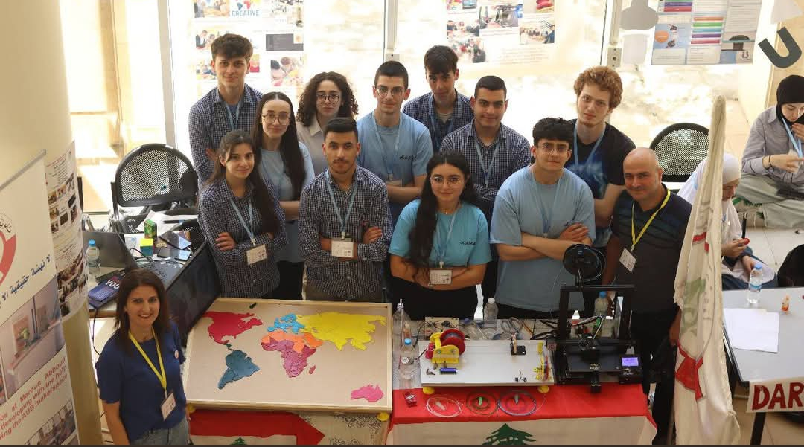

01
Innovation
Think
differently.
Students explore questions, challenge assumptions, and develop original ideas into possible solutions.

At MAOSS, students don't simply learn about science and technology, they build, experiment, design, and solve real problems. Our STEAM Lab gives ideas a place to become something real
The Initiative
Student-Led STEAM Initiative
STEAM Lab is a student-led initiative established in 2022 in partnership with Nafda.
It provides hands-on learning opportunities in Science, Technology, Engineering, Arts, and Mathematics, empowering students to develop innovation, problem-solving, and leadership skills through practical projects and workshops.
Inside the Lab
STEAM at MAOSS is not simply about using technology. It is about giving students the freedom to question, experiment, create, fail, improve, and try again.
Observe, question, experiment and discover.
Code, program and build solutions for real problems.
Design, prototype, test and improve.
Bring creativity, communication and design into every idea.
Think logically, analyse problems and turn ideas into solutions.
The STEAM Process
Great ideas rarely happen in one step. In the STEAM Lab, students learn to question, explore, design, build, test, and improve turning curiosity into meaningful solutions.
Start with curiosity. Ask questions, identify challenges, and imagine what could be possible.
Research, observe, experiment, and discover different ways to understand the problem.
Turn ideas into plans through sketches, models, prototypes, and creative thinking.
Bring the idea to life by creating, coding, constructing, or experimenting.
Try it out, observe what happens, find problems, and learn from what does not work.
Refine the solution, make changes, and try again until the idea becomes stronger.
What Students Explore
Students apply the STEAM process across different areas of creativity, technology, engineering, and problem-solving turning questions and ideas into things they can build, test, and improve.
Innovation
Students explore questions, challenge assumptions, and develop original ideas into possible solutions.
Robotics
Students combine programming, electronics, and engineering to design and test robotic systems.
Technology
Students use coding and digital tools to develop useful solutions and explore how technology can solve real-world problems.
Engineering & Design
Students move from sketches and digital models to prototypes, testing, refinement, and physical creations.
Learning in Action
In the STEAM Lab, learning doesn't stay on the page. Students work together, experiment with ideas, build solutions, and learn through every step of the process.
AUB × MAOSS
A Partnership in Innovation
MAOSS was among the pioneering public schools to develop a student-centered makerspace inspired by the makerspace model at the American University of Beirut.
Through collaboration with the Maroun Semaan Faculty of Engineering and Architecture at AUB and support from nafda, MAOSS students gained access to hands-on experiences in science, technology, engineering, coding, robotics, electronics, 3D printing, and creative making.
The initiative helped create a space where students could explore their passions, work together, develop practical skills, and turn ideas into real projects.
Maroun Semaan Faculty of Engineering & Architecture
Student-centered makerspace and STEAM learning
Supporting innovation and equitable access to STEM
Our STEAM Promise
Through curiosity, experimentation, collaboration, and making, students develop the confidence to turn ideas into possibilities.
Get in Touch